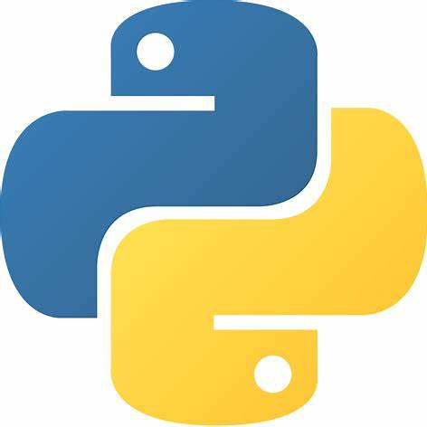

Compétences Techniques
Excel

Power BI

Python
SQL
AWS
R
Jupyter
Analyste Produit & Données | Expert en Gestion et Optimisation des Données | Intelligence d’Affaires
üîç Analyste de Donn√©es et Produit orient√©e r√©sultats, avec une expertise en gestion et optimisation des donn√©es pour la prise de d√©cision strat√©gique.
üéì Actuellement en alternance dans le cadre de mon Master en Data Management √† Aivancity, j‚Äôaffine mes comp√©tences en analyse de donn√©es, gestion de produit, et innovation.
üë• En tant que Data Product Analyst, je collabore avec des √©quipes produit pour concevoir et valider de nouvelles fonctionnalit√©s.
Excel
Power BI
Python
SQL
AWS
R
Jupyter
Exploration des sentiments des clients pour les compagnies aériennes.
Tech Stack : Python, Machine Learning
Voir sur GitHubDécouvrez plus sur mon parcours et mes réalisations.